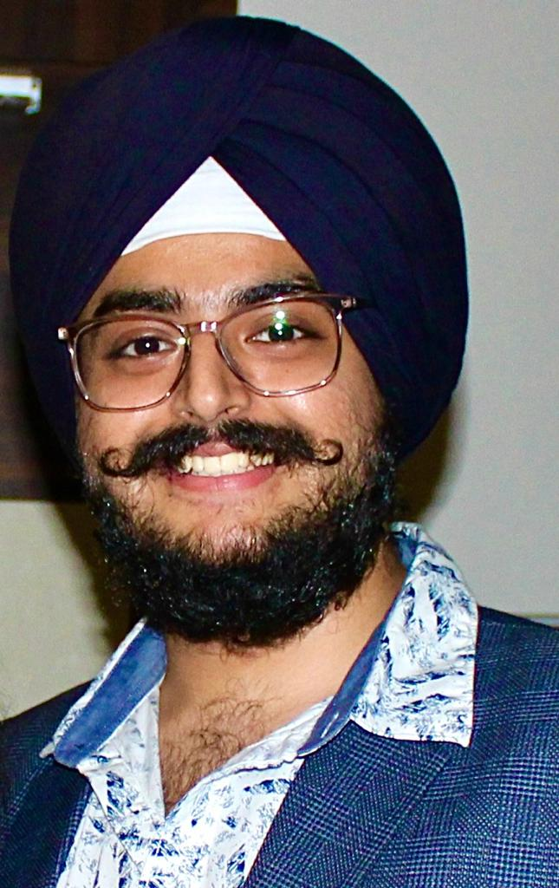

Sinong Wang is pursuing his Doctoral degree in Computer Science at the University of Texas at Arlington (UTA). He achieved his MS in Computer Science from UTA and his MS in Software Engineering from Northeastern University China. His research interests lie in the Natural Language Processing field of Artificial Intelligence. Currently, he is working on Natural Language Processing for Mental Health.
Research Experience for Undergraduates Site
Arlington Computational Linguistics Group (ACLGroup-REU)
REU Site Graduate Mentors
REU participants will be mentored by Ph.D.and other graduate students; they will provide guidance on making the most of a research experience, using lab equipment, applying to grad school, and the grad school experience.
Sinong Wang

Abhisangh Singh Arora
Abhisangh, currently pursuing a Master's in Computer Science at The University of Texas at Arlington with a GPA of 3.6, also holds a Bachelor's in Computer Engineering from the Maharashtra Institute of Technology, India. Abhisangh has developed expertise in Machine Learning and Data Science, evidenced by projects like Mango Leaf Disease Detection and Cancer Detection using Variational Autoencoders. Professionally experienced as a Programmer Analyst Trainee at Cognizant and a Data Science Intern at Critical AI, Abhisangh is skilled in Python, C++, SQL, and tools like OpenCV and MySQL. Abhisangh also holds AWS certifications in Web Analytics and Data Analysis and is passionate about photography and choreography.
Hridayesh Lekhak
Hridayesh Lekhak is an emerging talent in computer science, currently a freshman at the University of Texas at Arlington, projected to complete his bachelor's degree in May 2027. He's honed his web development skills through part-time work at UT Arlington and as a Junior Full Stack Developer at SilverLine System Integrators Pvt. Ltd. in Nepal. Hridayesh possesses a broad skill set including jQuery, Python, SQL, and JavaScript, and holds certifications in Python and MongoDB. His educational and practical experiences position him well for a promising career in tech.